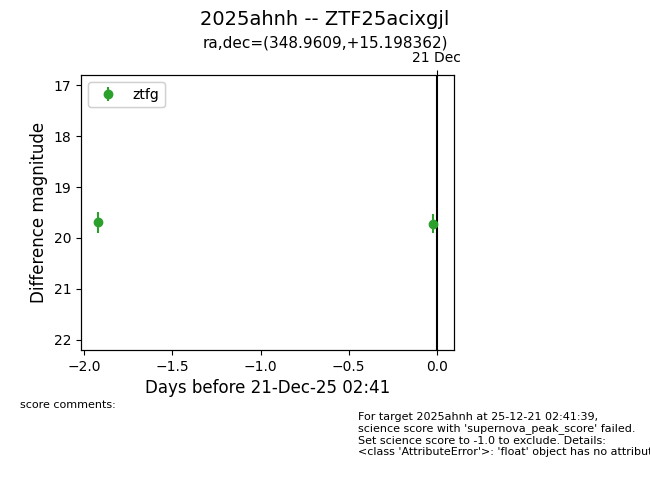
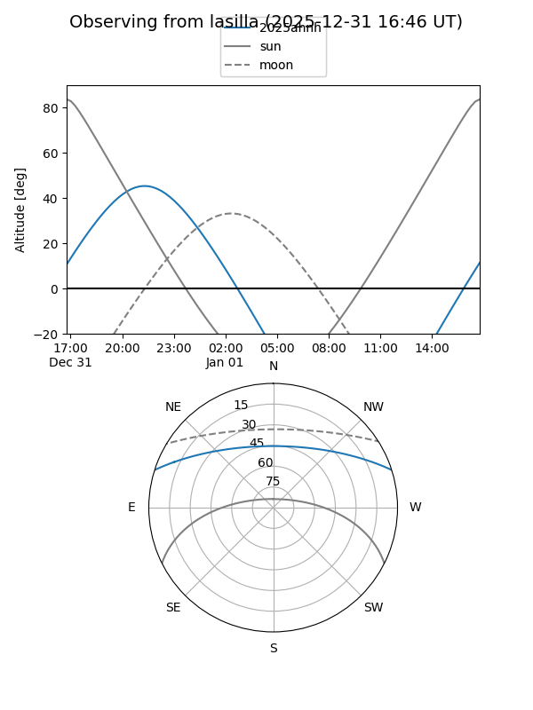
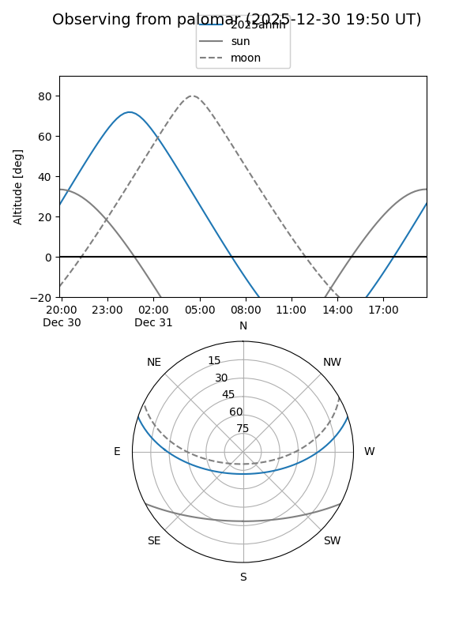
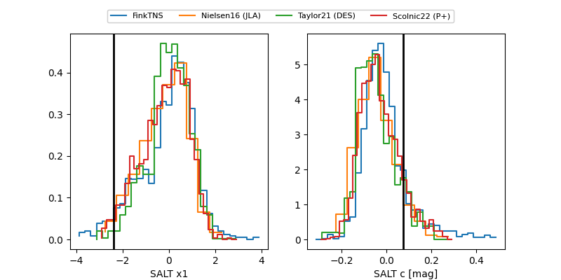

2025ahnh
Target 2025ahnh at 2025-12-31 18:00
Aliases and brokers:
FINK: link
Lasair: link
ALeRCE: link
TNS: link
YSE: link
alt names
ZTF25acixgjl (ztf,fink_ztf)
2025ahnh (tns,yse)
Coordinates:
equatorial (ra, dec) = 348.9609,+15.19836
equatorial (HMS+DMS) = 23:15:50.62,+15:11:54.10
galactic (l, b) = (91.3380,-41.73476)
Flags:
Photometry:
last ztfg=19.72, ztfr=19.58
2 ztfg, 2 ztfr detections
Lightcurve

Visibility


Additional plots
